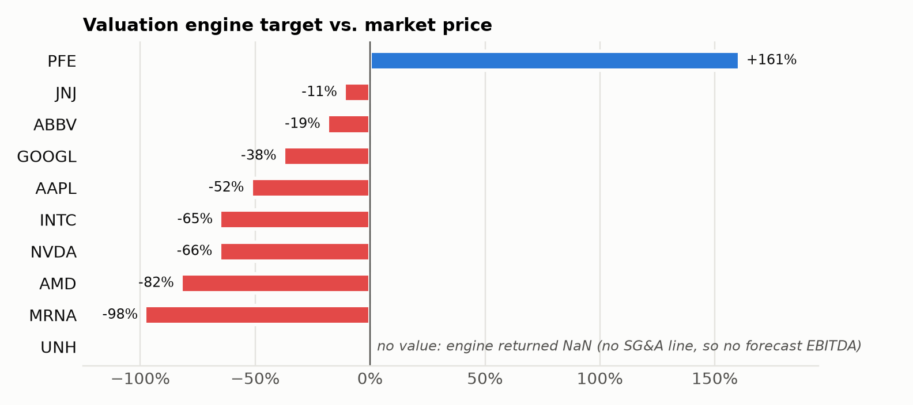
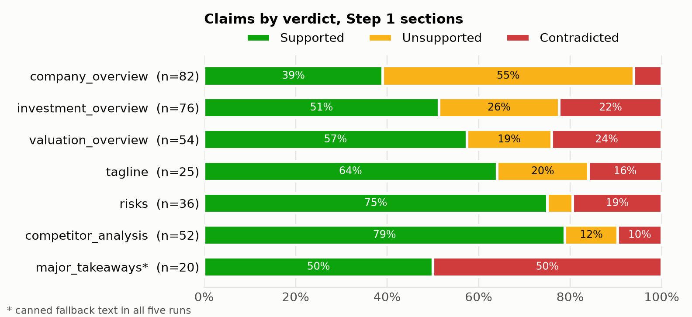
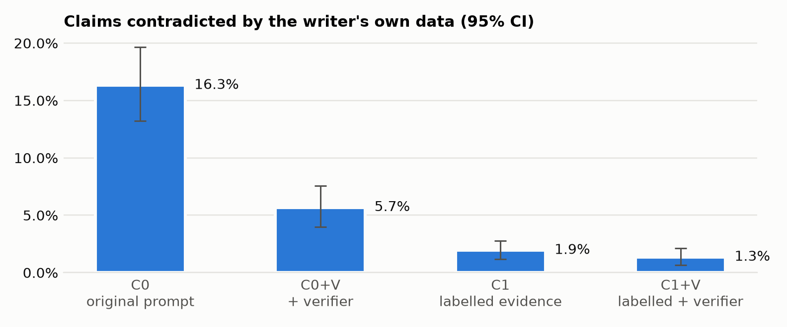

finrobot_equity pipeline on ten companies and audited three things: the numbers, the
valuation, and the prose. The reported financials are transcribed correctly. The valuation engine, however, reduces
to one constant multiple (10.84x FY+3 EBITDA per share for every company), and ten of its sixteen assumptions are not
shown. In the prose, 18% of claims are contradicted by the data the model was given, and two thirds of those
contradictions are period or status errors: reported results called "projected" or "guidance", or the historical CAGR
attached to forecast years. The cause is the evidence format, not the model inventing numbers. Labelling the
evidence and adding a verifier cut contradicted claims from 16.3% to 1.3% across ten companies, with the same result
on five held-out names. Most of the gain comes from labelling the evidence.
System. finrobot_equity fetches statements, ratios and peers from Financial Modeling Prep (FMP), builds a
three-year forecast, generates eight text sections with an LLM, and renders an HTML report. Three facts about the code
path that actually runs shaped the audit:
text_generator_agents.generate_text_section, a single
Chat Completions call per section (temperature 0.7, max 1,000 tokens). EquityResearchAgentManager is never
instantiated. The evidence for every section is therefore _prepare_user_prompt: three tables (financial metrics
and forecast, peer EBITDA, peer EV/EBITDA), with news only for the news section./api/v3 and /api/v4 endpoints only to
pre-August-2025 subscribers, so all 13 endpoints return 403. I moved them to /stable/, mapped renamed fields
back, and stopped error messages from printing the API key (patch 0001).major_takeaways is replaced by canned text
whenever the model omits the exact string "Revenue Growth:", which happened in 14 of 14 runs. Step 2 regenerates two
sections with gpt-4o-mini regardless of the configured model.| Component | Choice |
|---|---|
| Code | FinRobot 2717499b + patch 0001 (FMP /stable/) + patch 0002 (Part 3) |
| Data | FMP free plan: 250 calls/day, no news endpoint, symbol whitelist; SEC EDGAR XBRL for the data audit; Yahoo Finance for FY-end prices and analyst consensus |
| Models | Writer gpt-4.1 (T=0.7); Step 2 regeneration gpt-4o-mini; audit judge gpt-4.1 (T=0); verifier gpt-4.1-mini (T=0) |
| Cost | About $9.6 in total: grounding judge $7.03 (recorded tokens), Part 3 writer ~$1.29, verifier $0.39, pipeline runs ~$0.90; FMP free |
| Runtime | 42–63 s per report (Step 1: 26–43 s, Step 2: 15–29 s); scoring 438 claims: about 12 minutes |
| Set | Company (peers) | 3-year price | Why it is in the set |
|---|---|---|---|
| Starter | NVDA (AMD, INTC) | +402% | Required starting set. All five rose over three years; INTC mostly in the last year (+177%). |
| AMD (NVDA, INTC) | +458% | ||
| INTC (NVDA, AMD) | +192% | ||
| AAPL (MSFT, GOOGL) | +91% | ||
| GOOGL (MSFT, META) | +157% | ||
| Healthcare | ABBV (PFE, JNJ) | +106% | Winner |
| JNJ (PFE, ABBV) | +80% | Winner | |
| PFE (JNJ, ABBV) | +3% | Laggard | |
| UNH (JNJ, PFE) | −23% | Laggard; managed care, no SG&A line in FMP data | |
| MRNA (PFE, JNJ) | +115% | Turnaround (+717% in one year after a collapse); loss-making, R&D at 161% of revenue |
Healthcare was chosen because R&D-heavy companies stress the forecast (which omits R&D) and include a loss-maker. The FMP free plan does not cover LLY, MRK, BMY, AMGN, GILD or any managed-care company, so UNH is compared with JNJ and PFE. The five healthcare names were not used while designing or tuning the Part 3 changes (the pilots used NVDA and AMD) and serve as a held-out set.
For NVDA and AAPL, 27 line items were checked against the 10-K XBRL facts. Each filing value carries its accession
number (audit/data_audit.csv). 18 match within rounding, and every difference has an explanation:
| Item | Pipeline | Filing | Verdict and explanation |
|---|---|---|---|
| NVDA EBITDA FY2026 | $144.6bn | $133.2bn | Definition: FMP uses pre-tax income + interest + D&A, so it counts $11.1bn of non-operating income (mostly investment gains). The report never says so. |
| NVDA EV/EBITDA FY2026 | 31.4x | 34.1x | Definition: the same EBITDA, plus lease liabilities counted as debt. |
| NVDA EPS FY2024 | $1.21 | $12.05 | Restated for the 10-for-1 split of June 2024. Correct, but undocumented. |
| AAPL EBITDA FY2025 | $144.4bn | $144.7bn | Same definition difference; immaterial for Apple (−0.2%). |
| NVDA revenue "2025E" | $226.7bn | $130.5bn | Mislabelled period: forecast columns are hard-coded 2025E–2027E, so "2025E" is FY2027. |
| AAPL revenue "2025E" | $437.0bn | $416.2bn | Mislabelled period: the table shows FY2025 twice. |
The data layer is not the problem; labels and definitions are. Net income and R&D (8–9% of revenue) never reach the text sections at all.
Forecast. The defaults (5% / 6% / 4% growth, +1pp gross margin, −0.5pp SG&A margin a year) apply to every
company. Next-year revenue comes out 9% (AAPL) to 45% (NVDA) below analyst consensus. Forecast EBITDA is computed as
gross profit − SG&A, so R&D disappears in the first forecast year. AMD's EBITDA margin jumps from 21.0% to 39.0%,
MRNA's loss of $2.6bn becomes a profit, and UNH, which has no SG&A line, gets no forecast EBITDA at all. As revised
assumptions I used consensus growth for FY+1 and FY+2, faded halfway to 5% for FY+3, with flat margins
(forecast_assumptions.csv lists the CLI flags).
Valuation. I reproduced NVIDIA's $82.24 target by hand to the cent. The register of its assumptions
(valuation_assumptions.csv) shows ten of sixteen are not visible in the report: net debt is set to 10% of EV,
FCF to 60% of EBITDA, WACC to 10%, and the EV/EBITDA multiple is a 12x default printed as "Historical Avg Multiple". The
peer method is dropped silently because Step 2 passes peer data in the wrong shape. With the expected input it would
have returned $212.79. Both remaining methods are linear in one input, so for every company
target = 10.84 × FY+3 EBITDA / shares.

Sensitivity. ±5% revenue moves the target exactly ±5%, and ±2pp of margin moves it 3–7%. By the assignment's test the point estimate is therefore not "theater", but only because it is linear. Choices the reader never sees move it far more: consensus instead of default growth moves it +6% (AAPL) to +251% (NVDA); each company's own historical EV/EBITDA instead of 12x moves it +28% to +179%. The shipped sensitivity module never touches the target price, and its "95% confidence interval" is a hard-coded ±29.4% for every company.
Method. audit/grounding.py rebuilds the exact prompt each section was written from. A gpt-4.1 judge
splits the section into atomic claims and labels each Supported, Unsupported or Contradicted, citing the cells it used
and the year and status (reported vs. forecast) the claim asserts. Deterministic rules then override the judge where
the cited cells and the claim's wording conflict: a reported value worded as a forecast, or the CAGR attributed to
forecast years. A number check looks up every figure in the tables. Of a stratified sample of 65 claims, the scorer
agrees with the hand review on 59 (91%). All 30 rule overrides were correct. The judge is lenient: 4 of 15 randomly
sampled "Supported" claims were not.

Which sections hallucinate most, and why it is structural.
company_overview is asked for "business model, products/services, market position" and given three financial
tables. 55% of its claims are unsupported: founding year, headquarters, product lines, market position. Overall,
quantitative claims are 75% supported and 1% unsupported; qualitative claims are 28% supported and 63% unsupported.risks does not behave as the assignment predicts, because the 600–800-word risks agent is never
called. The CLI asks for "5 key investment risks, concise". The model anchors each bullet on a table figure and phrases
the rest as hypotheticals, which are not checkable claims. That gives a high grounding rate (75%) but not risk analysis.competitor_analysis is 45% grounded
against 79% for the gpt-4.1 version it replaces.| Output | Run 1 | Run 2 | Run 3 | Stable? |
|---|---|---|---|---|
| Rating / target / engine target | Buy / $339.17 / $82.24 | same | same | Yes, because no LLM produces them |
| Top-3 risk categories | valuation, growth, margins | valuation, growth, competition | valuation, growth, competition | No (Jaccard 0.5 / 0.5 / 1.0; all five categories identical) |
| Grounding rate (Step 1) | 43% | 44% | 46% | In aggregate, yes |
| Tagline grounding | 100% | 75% | 50% | No; section-level results swing up to 100 points |
The error rate is a property of the prompt and evidence; which sentence is wrong is chance. That argues for fixing the prompt, not individual outputs, and for evaluating on many samples.
Design (patch 0002: 4 files, +289/−20 lines, 5 unit tests).
--enable-verifier, gpt-4.1-mini). After each section is written, it checks the
section against the writer's data plus the notes and replaces sentences that mislabel reported vs. forecast figures,
misattribute the CAGR, misquote numbers or cite non-existent sources. Changes are exact sentence replacements, logged
in verifier_log.json. Statements the data does not cover are listed, not deleted. A verifier error never
blocks the report.Evaluation. A 2 × 2 experiment on the same saved data: 10 companies × 7 sections, original vs. labelled prompt, each with and without the verifier. The writer is called exactly as the pipeline calls it. Each text is scored against the prompt its writer saw, using the Part 2.3 scorer plus an LLM-free status-error counter. The counter shows 0 false positives and detects 50/50 injected errors; its precision on real text is about 85%.

| Metric | C0 original | C0 + verifier | C1 labelled | C1 + verifier |
|---|---|---|---|---|
| Contradicted claims | 16.3% | 5.7% | 1.9% | 1.3% |
| — held-out healthcare only | 16.6% | 6.6% | 1.5% | 1.3% |
| Grounding rate | 57.6% | 68.4% | 82.5% | 84.1% |
| Unsupported claims | 26.1% | 25.9% | 15.5% | 14.6% |
| Supported claims (count) | 413 | 506 | 680 | 686 |
| Status errors per section (LLM-free counter) | 1.47 | 0.27 | 0.03 | 0.03 |
| Words per section | 227 | 224 | 244 | 240 |
| Part of the report | Today | Why, and what would have to change |
|---|---|---|
| Reported financial tables | Usable with caveats | Transcribed correctly; the EBITDA definition must be stated, and net income and R&D should be shown. |
| Forecast table | No | One set of constants for every company; R&D omitted from EBITDA. Needs company-specific drivers (consensus or a model) and the full cost structure. |
| Rating and target price | No | The page-1 rating is the analyst consensus restated, while the report's own valuation says −11% to −98% (or +161% for PFE). It needs one valuation with disclosed WACC, multiple and net debt, and the rating should follow from it. |
| Numerical prose | With patch 0002, close | Contradictions fall from 16% to about 1%. It still needs a human read of anything tied to a decision. |
| Descriptive prose (overview, competition) | No | 12–55% of claims come from model memory. It needs source documents (filings text, segment data) in the evidence, or a narrower brief. |
| Risks and news | No | Risks restate valuation figures; no news on the data plan. They need risk-relevant evidence (filing risk factors, news). |
The pipeline is a good drafting tool for the numerical description of reported results once the evidence is labelled. It is not yet a research product: the parts a PM would act on (forecast, valuation, rating) are fixed constants presented as analysis, and the report contradicts itself between page 1 and its valuation section.
To support a PM's decision directly, four things would have to change:
All tables, notebooks, patches and commands are in this folder; see README.md. Every number in this report
is produced by the notebooks in audit/.